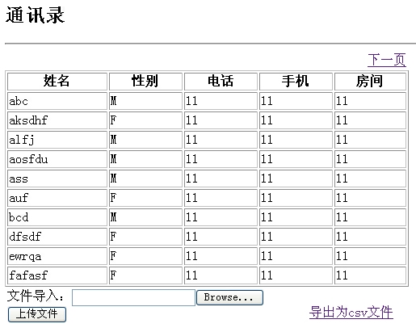
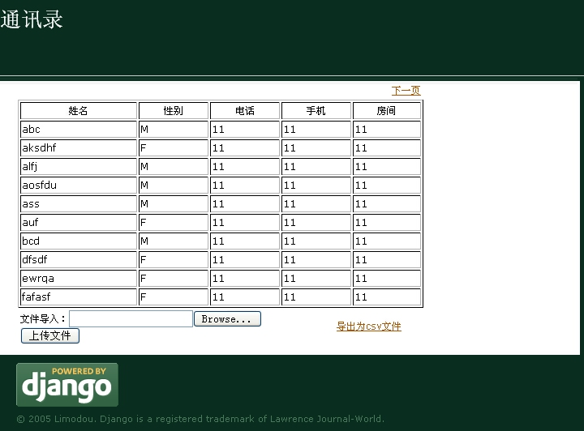

| 作者: | limodou |
|---|---|
| 联系: | limodou@gmail.com |
| 版本: | 0.1 |
| 主页: | http://wiki.woodpecker.org.cn/moin/NewEdit |
| BLOG: | http://www.donews.net/limodou |
| 版权: | FDL |
不知道大家有没有对这个通讯录感到厌烦了，希望没有，因为还有一些东西没有讲完呢。
最让我感觉不满意的就是通讯录的显示了，的确很难看，希望可以美化一下。那么主要从这几方面：
- 对姓名进行排序
- 生成分页结果
- 增加css和一些图片
可以在 model 中增加一个叫 Meta 的内类，然后通过对其设置类属性可以用来控制 model 的模型属性。如我们想实现表的排序，可以在 Meta 中增加一个 ordering = ['name'] 的属性即可。它表示按 name 进行排序。它可以有多个字段。如果在字段前加'-'表示倒序。修改完毕在浏览器中看一下效果就知道了。
Note
在 0.92 版之前 Meta 为 META 。同时我们在前一讲看到的 Admin 也是原本在 META 下使用的。但在 0.92 版发生了改变。
<h1 id="title">通讯录</h1>
<hr>
<div>
<table border="0" width="500">
<tr align="right">
<td>{% if has_previous %}
<a href="/address?page={{ previous }}">上一页</a>
{% endif %} {% if has_next %}
<a href="/address?page={{ next }}">下一页</a>
{% endif %}</td></tr>
</table>
<table border="1" width="500">
<tr>
<th>姓名</th>
<th>性别</th>
<th>电话</th>
<th>手机</th>
<th>房间</th>
</tr>
{% for person in object_list %}
<tr>
<td>{{ person.name }}</td>
<td>{{ person.gender }}</td>
<td>{{ person.telphone }}</td>
<td>{{ person.mobile }}</td>
<td>{{ person.room }}</td>
</tr>
{% endfor %}
</table>
</div>
<table border="0" width="500">
<tr>
<td>
<form enctype="multipart/form-data" method="POST" action="/address/upload/">
文件导入：<input type="file" name="file"/><br/>
<input type="submit" value="上传文件"/>
</form>
</td>
<td><p><a href="/address/output/">导出为csv文件</a></p></td>
</tr>
</table>
这时我仍然使用的是 generic view 来处理。但对布局作了简单的调整，将导入和导出的内容移到下面去了。同时增加了对分页的支持:
{% if has_previous %}
<a href="/address?page={{ previous }}">上一页</a>
{% endif %} {% if has_next %}
<a href="/address?page={{ next }}">下一页</a>
{% endif %}
在使用 generic view的 object_list 时，它会根据 URL Dispatch 中是否设置了 paginate_by 这个参数来决定是否使用分页机制。一会我们会看到在 urls.py 的这个参数。一旦设置了这个参数，则 object_list 会使用 Django 提供的一个分页处理器来实现分页。它会自动产生分页所用到的许多的变量，这里我们使用了 has_previous, previous, has_next, next 这四个变量，还有其它一些变量可以使用。具体的参见 Generic views 文档。
这里是根据是否有前一页和下一页来分别生成相应的链接。对于分页的链接，需要在url中增加一个 Query 关键字 page 。因此我的模板中会使用 page={{ previous }} 和 page={{ next }} 分别指向前一页和下一页的页码。
from django.conf.urls.defaults import *
from newtest.address.models import Address
info_dict = {
# 'model': Address,
'queryset': Address.objects.all(),
}
urlpatterns = patterns('',
(r'^/?$', 'django.views.generic.list_detail.object_list',
dict(paginate_by=10, **info_dict)),
(r'^upload/$', 'address.views.upload'),
(r'^output/$', 'address.views.output'),
)
修改了原来传给的 object_list 的 info_dict 参数，这里设置每页的条数为 10 条:
dict(paginate_by=10, **info_dict)
这是将新的参数与原来的参数合成一个新的字典。
显示效果为
下面让我们为它添加一些CSS和图片，让它变得好看一些。
首先要说明一下，我们一直处于开发和测试阶段，因此我们一直使用的都是 Django 自带的 server(其实我个人感觉这个 server 的速度也挺快的)，但最终我们的目的是把它部署到 Apache 上去。现在我们打算增加 CSS 和添加一些图片， Django 提供了这个能力，这就是对静态文件的支持，但是它只是建议在开发过程中使用。真正到了实际环境下，还是让专门的 web server 如 Apache 来做这些事情。只要改一下链接设置就好了。更详细的说明要参见 Serving static/media files 的文档。同时在 Django 中为了不让你依赖这个功能，特别在文档的开始有强烈的声明：使用这个方法是低效和不安全的。同时当 DEBUG 设置(在 settings.py 中有这个选项， True 表示处于调试期，会有一些特殊的功能)为 False 时，这个功能就自动无效了，除非你修改代码让它生效。
from django.conf.urls.defaults import *
from django.conf import settings
urlpatterns = patterns('',
# Example:
# (r'^testit/', include('newtest.apps.foo.urls.foo')),
(r'^$', 'newtest.helloworld.index'),
(r'^add/$', 'newtest.add.index'),
(r'^list/$', 'newtest.list.index'),
(r'^csv/(?P<filename>\w+)/$', 'newtest.csv_test.output'),
(r'^login/$', 'newtest.login.login'),
(r'^logout/$', 'newtest.login.logout'),
(r'^wiki/$', 'newtest.wiki.views.index'),
(r'^wiki/(?P<pagename>\w+)/$', 'newtest.wiki.views.index'),
(r'^wiki/(?P<pagename>\w+)/edit/$', 'newtest.wiki.views.edit'),
(r'^wiki/(?P<pagename>\w+)/save/$', 'newtest.wiki.views.save'),
(r'^address/', include('newtest.address.urls')),
(r'^site_media/(?P<path>.*)$', 'django.views.static.serve',
{'document_root': settings.STATIC_PATH}),
# Uncomment this for admin:
(r'^admin/', include('django.contrib.admin.urls')),
)
你会看到 site_media 就是我将用来存放 CSS 和图片的地方。 django.views.static.serve 需要一个 document_root 的参数，这里我使用了一个 STATIC_PATH ，它从哪里来呢？它是我自已在 settings.py 中定义的。在前面有一个导入语句:
from django.conf import settings
从这里可以看到是如何使用 settings.py 的，我们完全可以自已定义新的东西，并让它在整个项目中生效。
这样根据上面 urls.py 的设置，我们以后将通过 /site_media/XXX 来使用某些静态文件。
为了美化，我想需要一个 CSS 文件来定义一些样式，同时我还想提供一个 Django Powered 的图片。 在这里有官方提供的图标 。 于是我下了一个放在了 media 目录下。同时 CSS 怎么办，自已重头写，太麻烦，反正只是一个测试。于是我下载了 Django 站点用的 css 叫 base.css 也放在了 media 下面。下面就是对模板的改造。
Note
在 SVN 中我放了一个 css 和 gif 图片大家可以使用，不然可能看不出效果。
为了通用化，我新增了一个 base.html 它是一个框架，而以前的 address_list.html 是它的一个子模板。这样我们就可以了解如何使用模板间的嵌套了。
<!DOCTYPE html PUBLIC "-//W3C//DTD XHTML 1.0 Transitional//EN"
"http://www.w3.org/TR/xhtml1/DTD/xhtml1-transitional.dtd">
<html xmlns="http://www.w3.org/1999/xhtml" xml:lang="en" lang="en">
<head>
<meta http-equiv="Content-type" content="text/html; charset=utf-8" />
<meta http-equiv="Content-Language" content="en-us" />
<title>Address</title>
<meta name="ROBOTS" content="ALL" />
<meta http-equiv="imagetoolbar" content="no" />
<meta name="MSSmartTagsPreventParsing" content="true" />
<meta name="Copyright" content="This site's design and contents Copyright (c) 2005 Limodou." />
<meta name="keywords" content="Python, Django, framework, open-source" />
<meta name="description" content="Django is a high-level Python Web framework that encourages rapid development and clean, pragmatic design." />
<link href="/site_media/base.css" rel="stylesheet" type="text/css" media="screen" />
</head>
<body>
<div id="container">
{% block content %}content{% endblock %}
</div>
<div id="footer">
<div>
<img src="/site_media/djangopowered.gif"/>
</div>
<p>© 2005 Limodou. Django is a registered trademark of Lawrence Journal-World.</p>
</div>
</body>
</html>
有些代码也是从 Django 的网页中拷贝来的。特别要注意的是:
{% block content %}content{% endblock %}
这样就是定了一个可以扩展的模块变量块，我们将在 address_list.html 中扩展它。同时对 CSS 和 Django-Powered 的图片引用的代码是:
<link href="/site_media/base.css" rel="stylesheet" type="text/css" media="screen" /> <img src="/site_media/djangopowered.gif"/>
前面都是从 site_media 开始的。这样就将使用我们前面在 urls.py 中的设置了。
{% extends "base.html" %}
{% block content %}
<style type="text/css">
h1#title {color:white;}
</style>
<div id="header">
<h1 id="title">通讯录</h1>
</div>
<hr>
<div id="content-main">
<table border="0" width="500">
<tr align="right">
<td>{% if has_previous %}
<a href="/address?page={{ previous }}">上一页</a>
{% endif %} {% if has_next %}
<a href="/address?page={{ next }}">下一页</a>
{% endif %}</td></tr>
</table>
<table border="1" width="500">
<tr>
<th>姓名</th>
<th>性别</th>
<th>电话</th>
<th>手机</th>
<th>房间</th>
</tr>
{% for person in object_list %}
<tr>
<td>{{ person.name }}</td>
<td>{{ person.gender }}</td>
<td>{{ person.telphone }}</td>
<td>{{ person.mobile }}</td>
<td>{{ person.room }}</td>
</tr>
{% endfor %}
</table>
<table border="0" width="500">
<tr>
<td>
<form enctype="multipart/form-data" method="POST" action="/address/upload/">
文件导入：<input type="file" name="file"/><br/>
<input type="submit" value="上传文件"/>
</form>
</td>
<td><p><a href="/address/output/">导出为csv文件</a></p></td>
</tr>
</table>
</div>
{% endblock %}
基本上没有太大的变化，主要是增加了一些 div 标签，同时最开始使用:
{% extends "base" %}
表示是对 base 的扩展，然后是相应的块的定义:
{% block content %}
...
{% endblock %}
注意，所有扩展的东西一定要写在块语句的里面，一旦写到了外面，那样就不起作用了。
Django 的模板可以不止一次的扩展，但这里没有演示。
现在你看到的页面是不是象我这样？
版权是一个可能我们大多数人都不重视的问题，但在实际生产中，这是一个必须重视的问题。许多东西象CSS,图片，甚至可能是一种布局，设计都有可能有版权，在使用这些东西的时候一定要注意相关的说明。不要给自已造成麻烦。如果你不清楚，建议你去找清楚的人，或与所有者联系。特别是对于开源，版权更是一个很重要的东西，因为这是保护我们的武器，希望每个人都重视。特别是对于正式发布的东西，一定要将版权问题交待清楚。